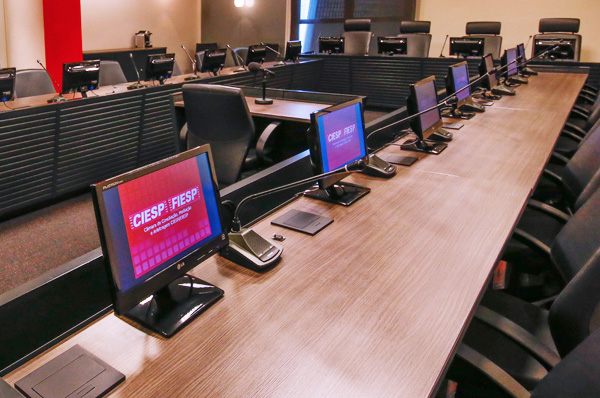

The Chamber
The Chamber of Conciliation, Mediation and Arbitration Ciesp/Fiesp ("Chamber") was founded in May 1995, by the Center of Industries of São Paulo (Ciesp) and by the Federation of Industries of São Paulo (Fiesp). The Chamber aims at providing administration services of conciliation, mediation and arbitration proceedings involving contract-related disputes. Its organization and management have full autonomy and independence. One of the leaders in the Brazilian market, the Chamber has been supporting the consolidation of the adequate dispute resolution methods.
Message of the President of Ciesp/Fiesp
The Ciesp/Fiesp Chamber of Conciliation, Mediation and Arbitration has been a key dispute resolution institution with a positive impact on both the society and industry sectors. The Chamber is presided over by former justices and former chief-justices of the Brazilian Supreme Court (the Federal Supreme Court, or STF) Sydney Sanches and Ellen Gracie, and draws upon a list of arbitrators and mediators made up of renowned jurists and court judges. Such extrajudicial dispute resolution system has already successfully resolved more than one hundred cases in the past years.
Because it affords a faster dispute resolution method, the Chamber meets companies' needs by reducing proceeding time and costs, and contributes to reducing the number of cases brought before courts.
Given the value and efficiency provided by conciliation, mediation and arbitration, which are widely adopted throughout the world, these dispute resolution methods have increasingly expanded in Brazil.
Our entities are striving to spread these practices in both our state and country.
The State of São Paulo industry sector has promoted these methods with an eye to improving competitiveness in our business environment. To best serve the increasing demand, we are investing in new facilities and in continuous training programs for our team, by offering a suitable structure for the proper use of these dispute resolution methods.
We are committed to continuing this important work to show the value of conciliation, mediation and arbitration to Brazil and the world, and to providing continuous safeguard and support towards their development.

Paulo Skaf
President of the Center of Industries of the State of São Paulo (Ciesp)
and of the Federation of Industries of the State of São Paulo (Fiesp)

INTERNAL REGULATION OF THE CHAMBER OF CONCILIATION, MEDIATION AND ARBITRATION CIESP/FIESP
NAME AND LOCATION
1. The SÃO PAULO CHAMBER OF CONCILIATION, MEDIATION AND ARBITRATION – CIESP/FIESP shall be designated "Chamber of Conciliation, Mediation and Arbitration Ciesp/Fiesp," hereinafter referred to as "Chamber," located at Avenida Paulista, 1313, in the City of São Paulo, State of São Paulo, Brazil.
OBJECTIVES
2. The objective of the Chamber is to administer the conciliations, mediations and arbitrations that are submitted to it, providing assistance in the development of conciliations, mediations and arbitrations pursuant to the Chamber's Rules, in addition to the following functions:
a) to draft standard arbitration clauses, without prejudice to any other clause voluntarily stipulated by the parties;
b) to exchange and congregate with conciliation, mediation and arbitration institutions or bodies in Brazil or abroad, as well as to enter into collaboration or mutual cooperation or partnership agreements through Ciesp and/or Fiesp;
c) to engage in any activity related to conciliation, mediation and arbitration in Brazil and abroad.
ADMINISTRATION OF THE CHAMBER
3. The Chamber shall consist of a Presidency, a Superior Council and a Secretariat.
3.1. The Presidency of the Chamber shall be exercised pursuant to the terms provided for in this Regulation.
3.2. The Superior Council shall be composed of a President, a Vice-President and Councilors, who shall not be less than five, and always in an odd number.
3.3. The Secretary General shall be responsible for the operational administration of the Chamber.
4. The President of the Chamber shall:
a) administer and represent the Chamber, delegating powers as needed;
b) comply and demand compliance with both this Internal Regulation and the Rules;
c) designate the members of the permanent list of conciliators, mediators and arbitrators;
d) perform other functions as necessary for the fulfillment of both this Regulation and the Rules;
e) appoint conciliators, mediators and arbitrators, except as otherwise agreed between the parties, according to the nature and characteristics of the dispute, without prejudice to the terms of item 4.1;
f) issue supplementary and procedural rules intended to clarify doubts on the adoption of this Regulation and the Rules as regards cases not covered hereby;
g) review the schedule of costs and fees of the Chamber;
h) amend the Rules when necessary;
i) initiate, either sua sponte or upon request, and preside over administrative investigations with respect to the conduct of conciliators, mediators and arbitrators, by proposing to the Superior Council, if applicable, their removal from the Chamber, with due regard for their right of defense;
j) attend, as a permanent member, the meetings held by the Superior Council.
Where the President of the Chamber is absent and/or unable, the conciliators, mediators and arbitrators mentioned under item 'e' shall be jointly appointed by the President, the Vice-President of the Superior Council, and the Vice-President of the Chamber.
5. The Vice-President of the Chamber shall:
a) assist the President in the performance of his functions, in all relevant matters;
b) substitute for the President in his absences and inability, without prejudice to the terms of item 4.1;
c) attend meetings held by the Superior Council.
6. The Superior Council of the Chamber shall be responsible for:
a) coordinating, supervising and guiding the Chamber's mission through strategic policies designed to accomplish its purposes;
b) organizing, governing and issuing norms to ensure achievement of its goals
c) promoting its activities and disseminating the culture of alternative dispute resolutions of controversies and disputes, thus contributing to social peace;
d) proposing that Ciesp and Fiesp enter into partnership agreements so as to expand their activities, and to engage in exchanges with cultural, scientific and technological institutions, professional and academic associations, government-owned and private companies, as a means to enhance the development of alternative dispute resolution methods;
e) proposing strategies and planning to the Chamber;
f) deciding on any incidents and resolving any inquiries made by the President of the Chamber in the course of conciliation, mediation and arbitration proceedings;
g) clarifying doubts and providing assistance to the Presidency of the Council in administrative decisions;
h) ratifying the designation of conciliators, mediators and arbitrators for the permanent list of the Chamber, pursuant to item 4.c herein;
i) imposing administrative actions for removal of conciliators, mediators and arbitrators from the respective list, subject to item 4.i.
7. The President of the Superior Council shall:
a) represent the Superior Council and perform functions inherent in the Presidency;
b) schedule and preside over meetings, by issuing the relevant call notices;
c) delegate functions to the members of the Chamber's Superior Council.
8. The Vice-President of the Superior Council shall:
a) assist the President in the performance of his functions, in all matters relevant to the Chamber's objectives;
b) substitute for the President in his absence and inability.
9. The Councilors shall:
a) submit proposals for improving the functioning of the Chamber and of the Superior Council;
b) attend meetings, debates and participate in the resolutions made by the Council.
10. The Secretary General shall:
a) ensure the proper execution of the Chamber's services, which includes providing information to the parties and their counsel, as needed;
b) receive and issue notices and communications as stipulated under the Rules;
c) keep custody of the Chamber documents and update records, by preserving confidentiality thereof;
d) arrange for the payment of costs and fees, by providing the parties with the relevant documentation.
10.1 The Secretary General shall be remunerated and appointed by the Center of Industries of the State of São Paulo – Ciesp, from among specialized professionals.
11. The President and Vice-President of the Chamber, the President and Vice-President of the Superior Council and the other Councilors shall be appointed by the President of the Center of Industries of the State of São Paulo – Ciesp and by the President of the Federation of Industries of the State of São Paulo – Fiesp among reputable persons regarded as renowned legal or technical specialists.
11.1 The President of the Chamber, the Vice-President of the Chamber, and the members of the Superior Council shall not be remunerated on any account whatsoever for the performance of their functions, which are deemed to be honorary positions.
CONCILIATORS, MEDIATORS AND ARBITRATORS
12. Conciliators, mediators and arbitrators shall have spotless reputation and notable juridical or technical learning, who shall be included in the relevant permanent list following appointment by the President of the Chamber and ratified by the Superior Council;
12.1 In the performance of their functions, conciliators, mediators and arbitrators shall be impartial, discrete, competent, diligent, and shall strictly conform to the norms of the Code of Ethics.
13. Within the framework of the Chamber, the President, the Vice-President, the members of the Superior Council, the Secretary General and the Secretariat employees shall not participate in conciliation, mediation and arbitration proceedings if they have any interest in the dispute.
14. Except as otherwise agreed between the parties, the conciliators, mediators and arbitrators who have acted in conciliation and mediation proceedings are prevented from acting as arbitrators with regards to the same dispute.
15. Each and every change to be made in the Chamber structure or Internal Regulation shall necessarily be approved by the President of Ciesp and Fiesp.
São Paulo, October 6, 2011
Center of Industries of the State of São Paulo (Ciesp)
Federation of Industries of the State of São Paulo (Fiesp)
Paulo Antonio Skaf
President
President
Sydney Sanches
Former Justice and Chief Justice of the Federal Supreme Court
Vice-President
Ellen Gracie Northfleet
Former Justice and Chief Justice of the Federal Supreme Court
Superior Council
Presidency
President
Kazuo Watanabe
Former Justice of the Court of Justice of São Paulo
Vice-President
José Carlos de Magalhães
Attorney and Law Professor in São Paulo
Members
Ada Pellegrini Grinover "in memoriam"
Attorney and Law Professor in São Paulo
Adriana Braghetta
Attorney and Law Professor in São Paulo
Adriana Noemi Pucci
Attorney in São Paulo
Antonio Corrêa Meyer
Attorney in São Paulo
Carlos Alberto Carmona
Attorney and Law Professor in São Paulo
Debora Visconte
Attorney in São Paulo
Eduardo de Albuquerque Parente
Attorney and Law Professor in São Paulo
Fernanda Rocha Lourenço Levy
Attorney in São Paulo
Giovanni Ettore Nanni
Attorney and Law Professor in São Paulo
Hélcio Honda
Attorney in São Paulo
Hermes Marcelo Huck
Attorney and Law Professor in São Paulo
Luiz Fernando Alongi
Civil Engineer in São Paulo
Mario Sérgio Duarte Garcia
Attorney in São Paulo
Martim Della Valle
Attorney in São Paulo and Lisboa
Paula Andrea Forgioni
Attorney and Law Professor in São Paulo
Pedro Antonio Batista Martins
Attorney in Rio de Janeiro
Selma Maria Ferreira Lemes
Attorney and Law Professor in São Paulo
Secretariat of CMA Fiesp/Ciesp
Secretary-General
João Luiz Lessa Neto
Attorney
Deputy Secretary-General
Lilian Elizabeth Menezes Bertolani
Attorney
Members of the Secretariat
Daniel Falci
Case Manager
Jéssica Cacique
Case Manager
Larissa Hollo
Case Manager